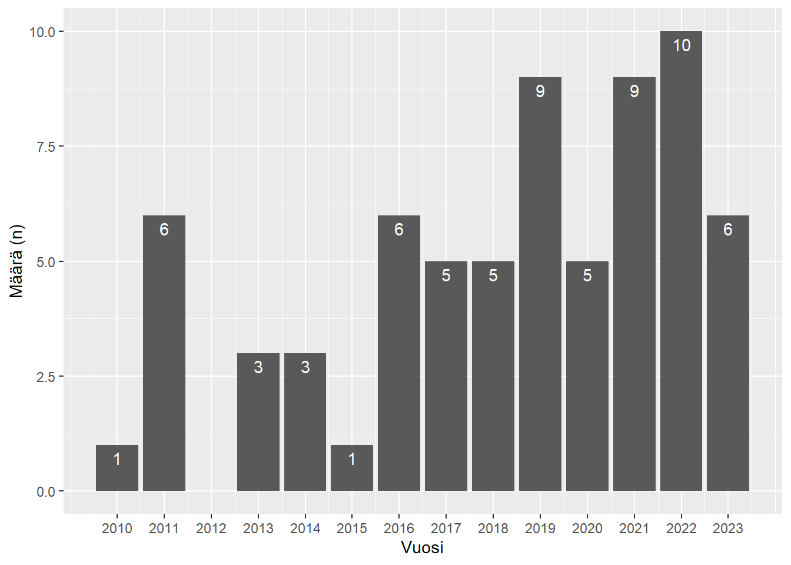
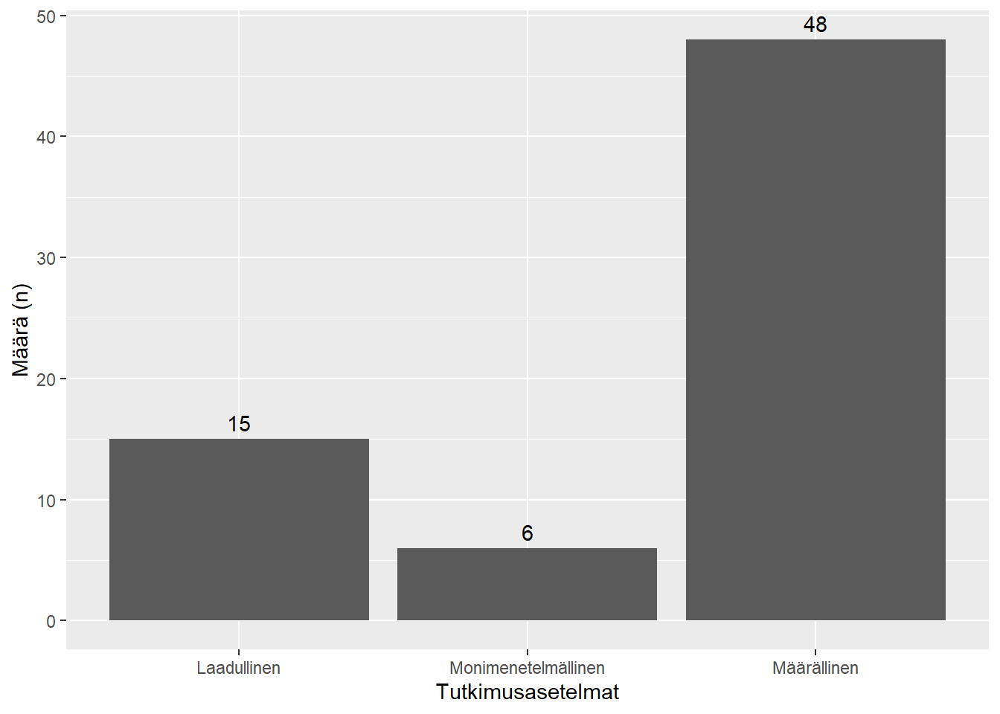
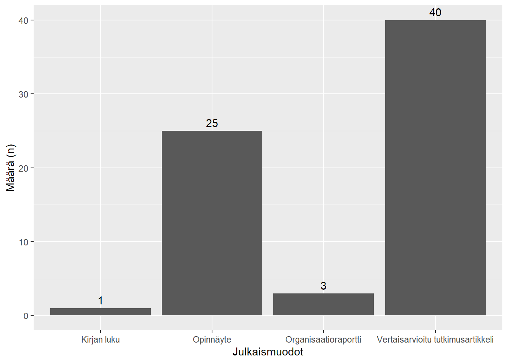
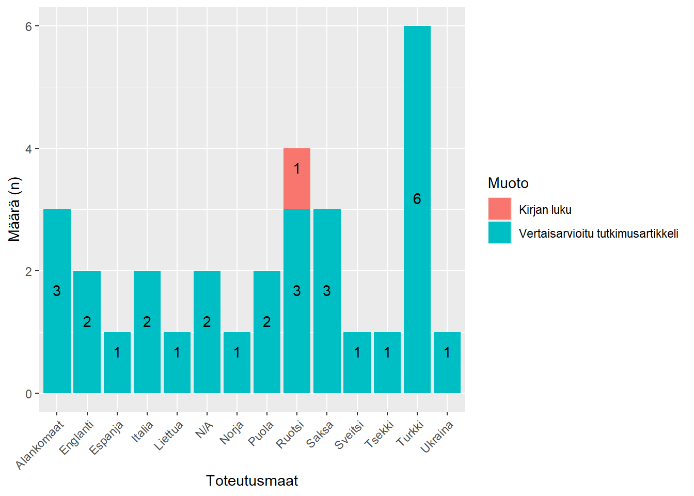
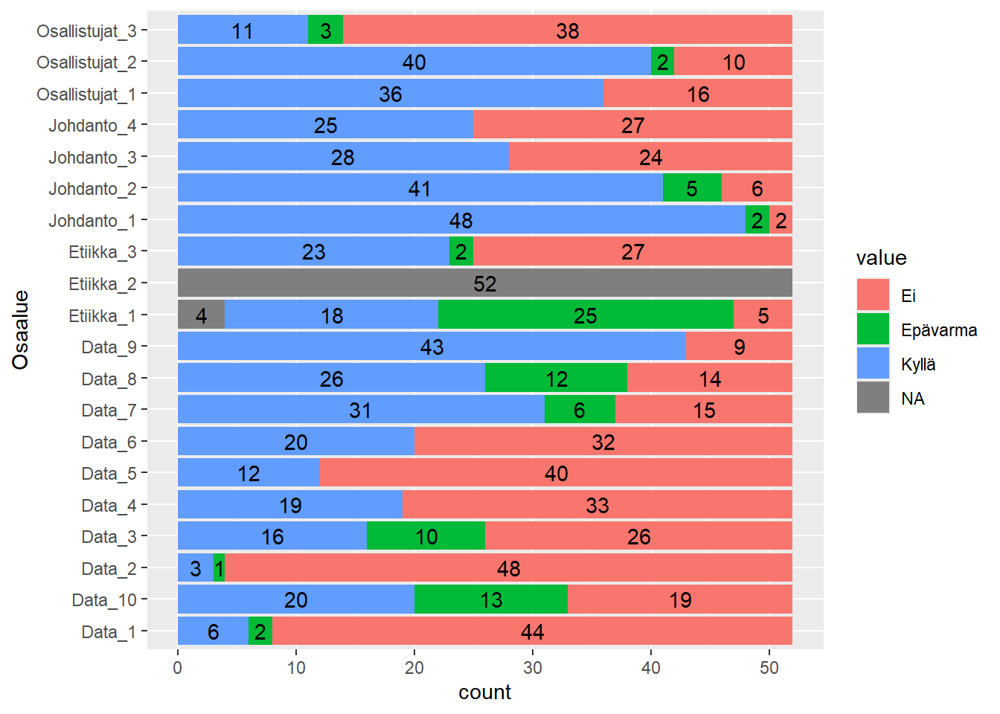

1 Kirjallisuuskatsauksen haku rajattiin ajalle 1.1.2010 - 30.9.2023. Vuoden 2023 tulokset ovat siten osittaisia, ja tutkimuksia on voitu julkaista päätösajan jälkeen.
Koodi
vuodet <-seq(from =2010, to =2023)kuva1 <-ggplot(data = data, mapping =aes(x = Vuosi)) +geom_bar(stat ="count", fill ="#c20e1a") +labs(y ="Määrä (n)") +scale_x_continuous(breaks = vuodet) +geom_text(aes(label = ..count..), stat ="count", vjust =1.5, colour ="white")kuva1

Kuva 5.1: Kirjallisuuskatsauksen tulokset julkaisuvuosittain
Tutkimusten julkaisuvuodet painottuvat 2010-luvun loppupuolelle ja 2020-luvun alkuun. Julkaisuvuosien mediaani on 2019.
5.2 Tutkimusasetelmat
Taulukko 5.2: Kirjallisuuskatsauksen tulokset tutkimusasetelmittain. Prosenttiluvut eivät ynnää sataan prosenttiin pyöristysvirheen takia.
Asetelma
Määrä (prosenttimäärät suluissa)
Määrällinen
48 (69,6 %)
Monimenetelmällinen
6 (8,7 %)
Laadullinen
15 (21,7 %)
Koodi
asetelmat <-unique(data$Tutkimusasetelma)kuva3 <-ggplot(data = data, mapping =aes(x = Tutkimusasetelma)) +geom_bar(stat ="count", fill ="#c20e1a") +labs(y ="Määrä (n)", x ="Tutkimusasetelmat") +scale_x_discrete(breaks = asetelmat) +geom_text(aes(label = ..count..), stat ="count", vjust =1.5, colour ="white")kuva3

Kuva 5.2: Kirjallisuuskatsauksen tulokset tutkimusasetelmittain
Yleisin tutkimusasetelma on määrällinen, ylivoimaisesti toteutettu kyselyllä mutta joitain rekisteritutkimuksia myös. Laadullisissa tutkimuksissa hyödynnettiin kyselylomakkeita, yksilö- ja ryhmähaastatteluja sekä havainnointia ja etnografiaa. Monimenetelmälliset asetelmat yhdistivät useasti määrällisen, strukturoidun kyselyn ja haastattelututkimuksen, joko kehittäen kyselytyökalua laadullisin menetelmin tai rakentaen toimintasuunnitelmaa kyselytulosten pohjalta.
5.3 Julkaisumuodot
Koodi
muodot <-unique(data$Muoto)kuva4 <-ggplot(data = data, mapping =aes(x = Muoto)) +geom_bar(stat ="count", fill ="#c20e1a") +labs(y ="Määrä (n)", x ="Julkaisumuodot") +scale_x_discrete(breaks = muodot) +geom_text(aes(label = ..count..), stat ="count", vjust =1.5, colour ="white")kuva4

Kuva 5.3: Kirjallisuuskatsauksen tulokset julkaisumuodottain
Yleisin julkaisumuoto on vertaisarvioitu tutkimusartikkeli, ja sitä seuraavaksi opinnäyte. Organisaatioraportteja ei löytynyt suuresti, ja haku tuotti vain yhden sisällytetyn vertaisarvioidun kirjan luvun.
5.4 Tutkimusmaat
Taulukko 5.3: Kirjallisuuskatsauksen tulokset tutkimusmaittain
Maa
Määrä (prosenttimäärä suluissa)
Alankomaat
3 (4 %)
Englanti
2 (3 %)
Espanja
1 (1 %)
Italia
2 (3 %)
Liettua
1 (1 %)
Norja
1 (1 %)
Puola
2 (3 %)
Ruotsi
4 (6 %)
Saksa
3 (4 %)
Suomi
39 (57 %)
Sveitsi
1 (1 %)
Tsekki
1 (1 %)
Turkki
6 (9 %)
Ukraina
1 (1 %)
Ei sovellettavissa
2 (3 %)
Koodi
maat <-unique(data$Toteutusmaa)kuva5 <- data %>% dplyr::filter(Toteutusmaa !="Suomi") %>%ggplot(mapping =aes(x = Toteutusmaa, fill = Muoto)) +geom_bar(stat ="count") +labs(y ="Määrä (n)", x ="Toteutusmaat") +scale_x_discrete(breaks = maat, guide =guide_axis(angle =45)) +geom_text(aes(label = ..count..), stat ="count", vjust =-0.5, colour ="black", position =position_stack(vjust =0.5))kuva5

Kuva 5.4: Kirjallisuuskatsauksen tulokset maittain ja julkaisumuodottain. Tuloksissa ei ole suomalaisia tutkimuksia. N/A = Ei sovellettavissa.
Kuvasta on poistettu suomalaiset tutkimukset, koska tutkimuksia haettiin useammassa muodossa kuin eurooppalaisia tutkimuksia.
Suomalaiset tutkimukset edustivat yli puolia kaikista tuloksista. Tämä voi osittain kuitenkin selittyä laajemmalla hakumenettelyllä suomalaisten tutkimusten osalta.
Yleisimmät tutkimusmaat Suomen ulkopuolella olivat Turkki, Ruotsi, Alankomaat ja Saksa. Muissa maissa oli julkaistu vain yksi tai kaksi tutkimusartikkelia.
6 Tutkimusharhan riskiarvio
6.1 Määrälliset kyselytutkimukset: Q-SSP-arvio
Määrällisten kyselytutkimusten osalta arvioimme tutkimusharhan riskin käyttäen Quality of Survey Studies in Psychology (Q-SSP) -työkalua (Protogerou ja Hagger 2020). Työkalulla on 20 instrumenttia neljässä eri kategoriassa: Johdanto ja tutkimuksen tarve (4 instrumenttia), osallistujien selosteet (3 instrumenttia), data (10 instrumenttia) ja etiikka (3 instrumenttia). Jokainen instrumentti on muotoiltu kysymykseksi (esim. “Was the problem or phenomenon under investigation defined, described, and justified?”), jolle tutkija koodaa vastauksen “Kyllä”, “Ei”, “Epäselvä” tai “N/A” (ei päde kyseiselle tutkimukselle). Vastausvaihtoehdot riippuvat kysymyksistä, jolloin kaikilla instrumenteilla ei ole mahdollista vastata “Epäselvä” tai “N/A”.
Pisteytys voidaan suorittaa joko koko työkalulle tai erikseen kategorioille. Koko työkalun pisteytys \(S\) lasketaan muuntamalla “Kyllä”-vastaukset \(K\) arvoksi 1, summaamalla kaikki arvot 1 yhteen, jakamalla summan pätevien instrumenttien määrällä \(T\) ja kertomalla tulos sadalla:
\[ S = \frac{\sum{K}}{T}*100 \]
Pätevien instrumenttien määrällä tarkoitetaan kaikkia instrumentteja, joille ei annettu arvoa “N/A”. Tämä määrä voi vaihdella 17 ja 20 instrumenttien välillä.
Me määrittelimme kuitenkin kaikille tutkimuksille arvon “N/A” instrumentilla “Were participants debriefed at the end of data collection?”, sillä emme tunnistaneet debriefing-menettelyn tarvetta katsauksemme tutkimuksissa.
Q-SSP-harha-arvion tulokset aakkosjärjestyksessä tutkimuksittain (n = 52)
Tutkimuksista vain kaksi yltävät laadukkaan tutkimuksen tasolle työkalun mukaan (?fig-qssp-harhadata-tutkimukset). Jos tutkimusharhan riskin raja-arvon laskee viiteenkymmeneen prosenttiin, 24 tutkimusta täyttävät kriteerin. Voidaan kuitenkin todeta, että tutkimusnäyttö on tämän vertailun mukaan heikkoa.
Koodi
harhadata_pivot <- harhadata %>% tidyr::pivot_longer(Johdanto_1:Etiikka_3, names_to ="Osaalue")ggplot(harhadata_pivot, aes(y = Osaalue, fill = value)) +geom_bar(orientation ="y") +geom_text(aes(label = ..count..), stat ="count", colour ="black", position =position_stack(vjust =0.5))

Q-SSP-harha-arvion tulokset instrumenteittain (n = 52)
?fig-qssp-harhadata-instrumentit näyttää tutkimusten tulokset instrumenteittain. Tutkimusten luotettavimmat tiedot löytyvät johdanto-osuuksista, joissa jopa 48 tutkimusta (92 %) kuvailevat ja motivoivat tutkimusongelman tekstissä.
Data-osuus on arvion osa-alueista heikoin, joskin vaihtelua esiintyy paljon. Vain kuusi tutkimusta määrittelivät selkeästi puuttuvat vastaukset jokaiselle muuttujalle, ja näistä vain kolme kuvailivat puuttuvien vastausten käsittelymenetelmät selkeästi. Toisaalta 43 tutkimusta (83 %) kuvailivat otannan demografisia piirteitä selkeästi.
Etiikan suhteen tutkimuksissa on myös parannettavaa. Noin puolet tutkimuksista ilmaisivat mahdolliset rahoituslähteet tai muut intressikonfliktit; on kuitenkin huomattava, että opinnäytteissä ei ole näiden intressien ilmaisemisen perinnettä, mikä voi vaikuttaa tuloksiin. 18 tutkimusta (38 %) ilmaisivat selkeästi saaneensa tietoisen suostumuksen vastaajilta, mutta yleisemmin emme pystyneet arvioimaan suostumuksen saantia.
Tarkistimme myös, onko julkaisumuotojen välillä eroja tutkimusten kokonaisriskiarviossa (?fig-qssp-vertailut).
Julkaisumuotojen välillä ei näytä olevan merkitseviä eroja \(F(2, 5.36) = 1.03, p = .42, \text{parittaiset }p < .05\). Organisaatioraporttien pienen määrän vuoksi emme voi kuitenkaan olla varmoja eroista.
Luotettavuusarviot näyttäisivät olevan vaihtelempia tutkimusartikkeleiden kohdalla kuin opinnäytteiden. Syyksi voidaan epäillä opinnäytteiden tarkempia muotovaatimuksia, jolloin opinnäytteet ovat samankaltaisempia (ja siten sisältävät samoja asioita) toistensa kanssa kuin tutkimusartikkelit.
Maguire, Brian J., Matthew Browne, Barbara J. O’Neill, Michael T. Dealy, Darryl Clare, ja Peter O’Meara. 2018. ”International Survey of Violence Against EMS Personnel: Physical Violence Report”. Prehospital and Disaster Medicine 33 (5): 526–31. https://doi.org/10.1017/S1049023X18000870.
Pekurinen, Virve, Laura Willman, Marianna Virtanen, Mika Kivimäki, Jussi Vahtera, ja Maritta Välimäki. 2017. ”Patient Aggression and the Wellbeing of Nurses: A Cross-Sectional Survey Study in Psychiatric and Non-Psychiatric Settings”. International Journal of Environmental Research and Public Health 14 (10): 1245. https://doi.org/10.3390/ijerph14101245.
Protogerou, Cleo, ja Martin S. Hagger. 2020. ”A Checklist to Assess the Quality of Survey Studies in Psychology”. Methods in Psychology 3 (joulukuuta): 100031. https://doi.org/10.1016/j.metip.2020.100031.
Savoy, Simon, Pierre-Nicolas Carron, Nathalie Romain-Glassey, ja Nicolas Beysard. 2021. ”Self-Reported Violence Experienced by Swiss Prehospital Emergency Care Providers”. Toimittanut Chak W. Kam. Emergency Medicine International 2021 (joulukuuta): 1–6. https://doi.org/10.1155/2021/9966950.
Schablon, Anja, Jan Felix Kersten, Albert Nienhaus, Hans Werner Kottkamp, Wilfried Schnieder, Greta Ullrich, Karin Schäfer, Lisa Ritzenhöfer, Claudia Peters, ja Tanja Wirth. 2022. ”Risk of Burnout Among Emergency Department Staff as a Result of Violence and Aggression from Patients and Their Relatives”. International Journal of Environmental Research and Public Health 19 (9): 4945. https://doi.org/10.3390/ijerph19094945.